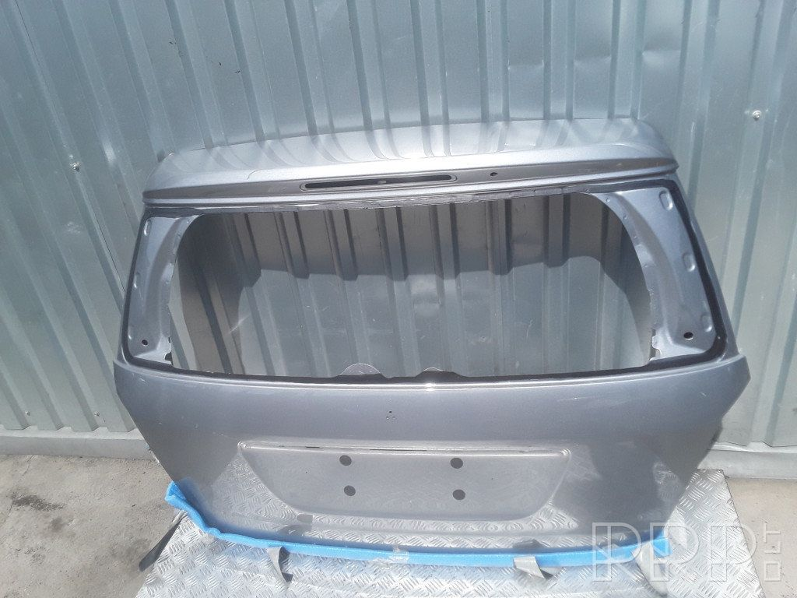

Automobilių dalys angliškai
2020.10.30 04:14
Kalbų resursai Anglų kalba Ispanų kalba Italų kalba Prancūzų kalba Vokiečių kalba Rusų kalba Suomių kalba Prisijungti Registruotis Pradžia Anglų kalba Žodynas Anglų kalbos žodynas Puslapis 26 iš 65 ➔ Važinėjimas automobiliu ir jo priežiūra Keliavimas autobusu ir traukiniu ➔
Automobilių dalys
Čia yra angliški įvairių automobilio dalių pavadinimai.
Valdymas
accelerator akceleratorius brake pedal stabdžio pedalas clutch pedal sankabos pedalas fuel gauge kuro kiekio matuoklis gear stick pavarų perjungimo svirtis handbrake rankinis stabdis speedometer spidometras steering wheel vairas temperature gauge temperatūros matavimo prietaisas warning light įspėjamoji šviesaMechaninės dalis
battery baterija brakes stabdžiai clutch sankaba engine variklis fan belt ventiliatoriaus dirželis exhaust išmetimas exhaust pipe išmetamasis vamzdis gear box pavarų dėžė ignition uždegimas radiator radiatorius spark plug uždegimo žvakė windscreen wiper priekinio stiklo valytuvas windscreen wipers priekinio stiklo valytuvaiKiti naudingi žodžiai
air conditioning oro kondicionierius automatic automatinis central locking centrinis užraktas manual rankinis tax disc metinis mokestis sumokėtas (užrašas) sat nav ( satellite navigation sutrumpinimas) palydovinė navigacija Anglų kalbos žodynas Puslapis 26 iš 65 ➔ Važinėjimas automobiliu ir jo priežiūra Keliavimas autobusu ir traukiniu ➔Šviesos ir veidrodėliai
brake light stabdžių šviesos hazard lights avarinės šviesos headlamp priekinis žibintas headlamps priekiniai žibintai headlights priekiniai žibintai indicator indikatorius indicators indikatoriai rear view mirror galinis veidrodėlis sidelights šoniniai žibintai wing mirror šoninis veidrodėlisKitos dalys
aerial oro back seat galinė sėdynė bonnet variklio dangtis boot bagažinė bumper buferis, bamperis child seat vaiko kėdutė cigarette lighter cigarečių žiebtuvėlis dashboard prietaisų skydelis front seat priekinė sėdynė fuel tank degalų bakas glove compartment daiktadežė glovebox daiktadėžė heater šildytuvas number plate numerio lentelė passenger seat keleivio vieta šalia vairuotojo petrol tank benzino bakas roof stogas roof rack stogo bagažinė seatbelt saugos diržas spare wheel atsarginis vairas tow bar galinis kablys tyre padanga wheel ratas window langas windscreen priekinis stiklas Anglų kalbos žodynas Puslapis 26 iš 65 ➔ Važinėjimas automobiliu ir jo priežiūra Keliavimas autobusu ir traukiniu ➔Šio tinklapio anglų kalbos žodynas turi įgarsinimą — tiesiog paspauskite ant bet kurio žodžio.
Mobilioji programėlė
Mūsų apdovanojimus pelniusi angliškų frazių gido programėlė Android įrenginiams savyje talpina daugiau nei 6000 naudingų frazių ir žodžių su įgarsinimu.
© 2017 Speak Languages OÜ · Kopijuoti be autorių sutikimo draudžiama.
Privatumo politika · Naudojimosi sąlygos · Susisiekite su mumis
Lietuvių العربية Български Čeština Dansk Deutsch Ελληνικά English Español Eesti فارسی Suomi Français ગુજરાતી हिन्दी Hrvatski Magyar Bahasa Indonesia Italiano 日本語 한국어 Lietuvių Latviešu Bahasa Melayu Nederlands Norsk Polski Português Română Русский Slovenčina Svenska ภาษาไทย Türkçe Українська Tiếng Việt 中文